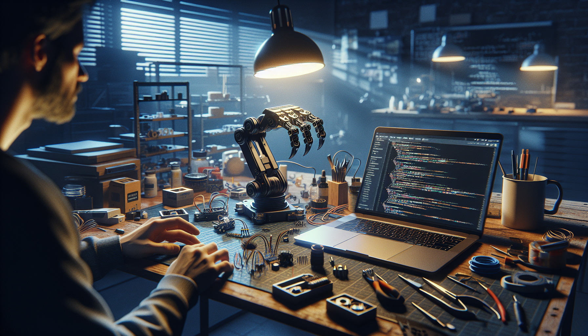

OpenClaw started as a simple idea: build something practical, hackable, and open enough that other developers and makers could actually use it, modify it, and improve it without needing permission from a black box vendor. Over time, that idea evolved into a public GitHub build that blends open source thinking with real-world experimentation. If you have ever wanted to follow a project from rough concept to working system, OpenClaw is exactly that kind of build.
This post is a behind-the-scenes look at what OpenClaw is, why I decided to build it in public, and what I hope other developers, makers, and AI enthusiasts can get from it. It is not a polished startup origin story. It is more like builder notes from the workbench: the motivations, the tradeoffs, the dead ends, and the reasons I think open GitHub builds still matter.
At its core, OpenClaw is an open source build designed around the idea of accessible experimentation. The name captures the spirit of the project: something mechanical, programmable, and extensible that can act on the world rather than just simulate it. Depending on how you approach it, OpenClaw can be seen as a robotics-inspired platform, a software-hardware playground, or a GitHub-first project where the source code and build process are just as important as the result.
I built OpenClaw to be understandable. That may sound obvious, but a lot of modern projects are difficult to learn from because the implementation details are hidden behind layers of abstraction, proprietary tooling, or undocumented assumptions. With OpenClaw, I wanted the architecture, code decisions, and build logic to be visible. If someone forks the repo, they should be able to trace how things work, not just run a prepackaged demo.
That means OpenClaw is not only about functionality. It is also about transparency. The repository is part source code, part documentation, and part invitation. You can inspect how components connect, how features evolve, and where the edges still are. For developers, that makes it easier to contribute. For makers, it lowers the barrier to building. For AI enthusiasts, it creates room to experiment with automation, perception, control loops, and agent-driven behaviors on top of a real project foundation.
The short version is that I wanted a project that was useful enough to matter and open enough to share. I have always been drawn to builds that sit between software and the physical world because they force you to be honest. Code can look elegant in a repository, but once it has to interface with motors, sensors, timing constraints, or messy user inputs, you find out quickly whether your abstractions hold up.
OpenClaw came from that tension. I wanted to create something that was technically interesting without becoming inaccessible. I also wanted to avoid the trap of building a closed demo that gets attention for a week and then disappears. By putting OpenClaw on GitHub from the beginning, I could treat the build itself as a living artifact.
There were a few motivations behind that decision:
In other words, OpenClaw was not built just to exist. It was built to invite participation and to create a foundation for future work.
One reason I felt strongly about making OpenClaw open source is that too many interesting builds stop at the surface. You see a slick video, a polished thread, or a product teaser, but you never get the actual mechanics. There is no source code, no architecture, no bill of materials, no explanation of what broke and why.
That kind of closed presentation can be inspiring, but it is not very useful if you are trying to learn or build. It turns projects into performances instead of references. As a developer, I learn the most from repos that show their seams. As a maker, I trust builds more when I can inspect the design choices. As someone interested in AI systems, I know that reproducibility matters. If others cannot see how a system was put together, they cannot meaningfully test, adapt, or extend it.
OpenClaw is my answer to that. I wanted the GitHub repository to be the real home of the project, not an afterthought. That means source code is central. Documentation is part of the product. Commits tell a story. Issues and future improvements remain visible. The project does not pretend to be finished before it is ready.
For me, that openness creates better feedback loops. People can suggest cleaner implementations, spot edge cases, adapt the build to different hardware, or connect it to AI workflows I had not considered. Open source is not just about licensing. It is about increasing the surface area for collaboration.
Every project teaches you something, but OpenClaw reinforced a few lessons in a very direct way. The first is that clarity beats cleverness. It is tempting to overengineer a system, especially when the audience includes other technical people. But the more complex the structure becomes, the harder it is for someone new to contribute. I kept coming back to a simple question: if another builder opens this repo, will they understand the intent?
The second lesson is that public building changes how you work. When you know others may read your code, reproduce your setup, or depend on your documentation, you become more disciplined. You write better notes. You think harder about naming. You are more likely to document assumptions instead of keeping them in your head. That extra effort is worth it because it turns a personal experiment into something reusable.
I also learned that momentum matters more than polish in early stages. A lot of promising projects die because the creator waits too long to share them. OpenClaw benefited from being visible before it was complete. That made it easier to refine direction, identify what others found interesting, and avoid wasting time on features that looked good in theory but did not help the core build.
And maybe the biggest lesson: people are far more willing to engage when a project feels real. Not perfect. Real. A repository with actual progress, actual decisions, and actual tradeoffs invites more trust than a polished placeholder ever could.
One of the reasons I am excited about OpenClaw is that it naturally sits at the intersection of several communities. Developers can approach it as a codebase and architecture problem. Makers can approach it as a build system with hardware and integration challenges. AI enthusiasts can approach it as a platform for experimentation, whether that means adding perception, planning, automation, or autonomous decision-making layers.
That overlap is where some of the best ideas happen. A maker might optimize a physical mechanism. A software engineer might improve reliability and maintainability. An AI builder might connect models or agents that expand what the system can do. OpenClaw is intentionally positioned to make those crossovers easier.
It is also the kind of project that benefits from modular thinking. Instead of forcing one path, the goal is to make the system flexible enough that people can use parts of it independently. Maybe someone only wants the control layer. Maybe someone only wants the hardware design ideas. Maybe someone wants to integrate it into a larger GitHub build or research workflow. That is a feature, not a distraction.
GitHub is more than a place to store code. For OpenClaw, it is the project memory. It captures not just the latest version, but the evolution of the build. That matters because the path is often more educational than the endpoint.
By centering the project on GitHub, I can keep everything in one place: source code, documentation, issues, iteration history, and future ideas. It also makes the project easier to fork, inspect, and contribute to. If someone wants to adapt OpenClaw for a different use case, GitHub gives them the tools to do that immediately.
There is also a cultural reason. Public repositories create accountability. They make it easier to keep shipping, keep documenting, and keep improving. Instead of building in a silo, I am building in a space where others can follow along and jump in when they have something to add.
OpenClaw is not a finished object. It is an evolving open source build. The next phase is about refinement, deeper documentation, and broader experimentation. That includes making the setup clearer, improving modularity, and expanding the kinds of workflows people can build on top of it.
I also want the project to remain approachable. As features grow, the challenge is to keep the foundation understandable. That means resisting unnecessary complexity and continuing to write for the next builder who lands on the repository and wants to get something working quickly.
If OpenClaw succeeds, it will not be because it became the most polished project in its category. It will be because it stayed useful, transparent, and open enough for others to make it their own.
So what is OpenClaw, really? It is an open source GitHub build born from the desire to make experimentation more accessible, more transparent, and more collaborative. It is a project for people who like seeing how things are made, not just what they look like when they are finished. And it is my attempt to build something in public that other developers, makers, and AI enthusiasts can actually use as a foundation.
I built OpenClaw because I wanted to share the process, not just the outcome. I wanted a project that invites curiosity, encourages modification, and stays honest about the realities of building. If that resonates with you, then you are exactly the kind of person I built it for.
Follow the OpenClaw build on GitHub and see the full source code.